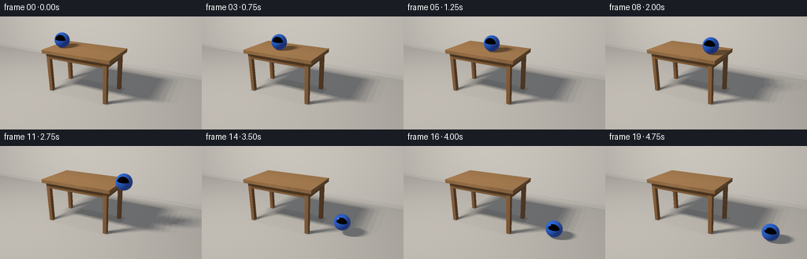
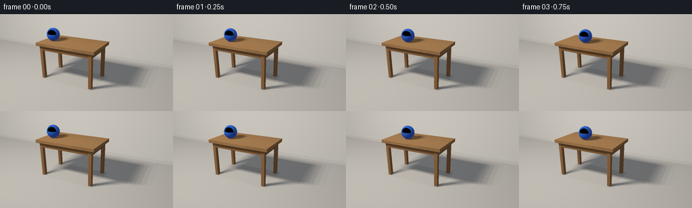

CODING AGENTS AS PIXEL WORLD MODELS
traex/GPT-6.1-Sol · instance_preservation_0020
点击播放 · 原生 RGB 像素
逐轮保存的候选
回放视频、检查图与代码变化。
每份候选均可单独播放。实际图片检查记录在下方工具轨迹中。
候选 01播放与检查图
点击播放 · 原生 RGB 像素


展开代码变化
--- 上一保存版本
+++ 本次保存版本
@@ -0,0 +1,299 @@
+"""Generate an RGB animation with a small, deterministic analytic ray renderer.
+No external renderer, assets, models, or simulation libraries are used.
+"""
+from pathlib import Path
+import json
+import numpy as np
+from PIL import Image
+import artifact_io
+
+ROOT = Path(__file__).resolve().parent
+SPEC = json.loads((ROOT / 'task_spec.json').read_text())
+W, H = SPEC['width'], SPEC['height']
+SS = 3
+SW, SH = W * SS, H * SS
+
+def unit(x):
+ return x / np.maximum(np.linalg.norm(x, axis=-1, keepdims=True), 1e-12)
+
+# World coordinates: z is vertical. The table's right-hand edge is x=1.
+CAM = np.array([4.1, -7.8, 4.6])
+TARGET = np.array([.15, 0., 1.])
+forward = unit(TARGET - CAM)
+right = unit(np.cross(forward, [0., 0., 1.]))
+up = np.cross(right, forward)
+xx, yy = np.meshgrid(np.arange(SW) + .5, np.arange(SH) + .5)
+focal = SH / (2 * np.tan(np.deg2rad(30) / 2))
+RAYS = unit(forward + ((xx-SW/2)/focal)[..., None]*right + ((SH/2-yy)/focal)[..., None]*up).reshape(-1, 3)
+
+# Boxes with material IDs: wood top, apron, legs, and painted baseboard.
+BOXES = []
+def box(lo, hi, mat):
+ BOXES.append((np.array(lo, float), np.array(hi, float), mat))
+box([-2.3, -.95, 1.84], [1., .95, 2.], 1)
+box([-2.12, -.84, 1.60], [.83, -.72, 1.85], 2)
+box([-2.12, .72, 1.60], [.83, .84, 1.85], 2)
+box([-2.12, -.73, 1.60], [-2., .73, 1.85], 2)
+box([.70, -.73, 1.60], [.83, .73, 1.85], 2)
+for lx in [-2.05, .75]:
+ for ly in [-.77, .77]:
+ box([lx-.085, ly-.085, .015], [lx+.085, ly+.085, 1.85], 3)
+box([-20., 3.65, 0.], [20., 3.8, .15], 5)
+
+
+def intersect_box(orig, dirs, lo, hi):
+ inv = 1. / np.where(np.abs(dirs) < 1e-10, 1e-10, dirs)
+ a = (lo-orig)*inv
+ b = (hi-orig)*inv
+ near = np.minimum(a,b)
+ far = np.maximum(a,b)
+ t0 = near.max(axis=-1)
+ t1 = far.min(axis=-1)
+ valid = (t1 >= np.maximum(t0, 1e-5))
+ return np.where(valid, np.where(t0 > 1e-5, t0, t1), np.inf), near, far
+
+
+def scene_intersect(orig, dirs, normals=True):
+ n = len(dirs)
+ depth = np.full(n, np.inf)
+ norm = np.zeros((n,3))
+ material = np.full(n, 4, int)
+ # Floor and the softly textured wall.
+ for axis, level, normal, mat in [(2, 0., [0,0,1], 0), (1, 3.8, [0,-1,0], 4)]:
+ with np.errstate(divide='ignore', invalid='ignore'):
+ t = (level-np.asarray(orig)[...,axis])/dirs[:,axis]
+ sel = (t>1e-5)&(t<depth)
+ depth[sel]=t[sel]; norm[sel]=normal; material[sel]=mat
+ for lo,hi,mat in BOXES:
+ t,near,far = intersect_box(orig,dirs,lo,hi)
+ sel=t<depth
+ if not np.any(sel): continue
+ depth[sel]=t[sel]; material[sel]=mat
+ axis = np.argmax(near[sel],axis=-1)
+ ns = np.zeros((sel.sum(),3))
+ ns[np.arange(sel.sum()),axis]=-np.sign(dirs[sel][np.arange(sel.sum()),axis])
+ # Subtle rounded joinery highlight, without altering physical dimensions.
+ p = np.asarray(orig) + dirs*t[:,None]
+ q=p[sel]
+ edge = np.minimum(q-lo, hi-q)
+ bevel = .018 if mat==1 else .009
+ for ax in range(3):
+ active=(axis!=ax)&(edge[:,ax]<bevel)
+ ns[active,ax]=np.where(q[active,ax]>(lo[ax]+hi[ax])/2,1.,-1.)*(1-edge[active,ax]/bevel)*.48
+ norm[sel]=unit(ns)
+ p=np.asarray(orig)+dirs*depth[:,None]
+ return depth,p,norm,material
+
+
+def box_shadow(orig, dirs, maximum):
+ blocked=np.zeros(len(dirs),bool)
+ for lo,hi,_ in BOXES:
+ t,_,_=intersect_box(orig,dirs,lo,hi)
+ blocked |= t<maximum
+ return blocked
+
+
+def material_color(p, m):
+ colors=np.zeros((len(p),3))
+ floor=m==0
+ # Warm, matte limestone. Fine structure is subdued rather than noisy.
+ tex=.007*np.sin(p[:,0]*47+p[:,1]*31)*np.sin(p[:,1]*63-p[:,0]*23)
+ colors[floor]=np.array([.52,.49,.44])*(1+tex[floor,None])
+ wall=m==4
+ colors[wall]=np.array([.64,.615,.56])*(1+.004*np.sin(p[wall,0:1]*50)*np.sin(p[wall,2:3]*38))
+ colors[m==5]=[.59,.565,.515]
+ for mat in [1,2,3]:
+ use=m==mat
+ q=p[use]
+ if not len(q): continue
+ longitudinal=q[:,0] if mat!=3 else q[:,2]*1.5
+ across=q[:,1] if mat==1 else (q[:,2] if mat==2 else q[:,0]+q[:,1])
+ # Growth-ring-like, gently warped long oak fibers.
+ phase=across*70+.65*np.sin(longitudinal*2.0)+.22*np.sin(longitudinal*5+across*7)
+ fine=(.5+.5*np.sin(phase*3+np.sin(longitudinal*3)))**14
+ grain=.055*np.sin(phase)+.022*np.sin(phase*2.3)-.035*fine
+ grain += .012*np.sin(across*490+longitudinal*11)
+ if mat==1:
+ plank=np.floor((q[:,1]+.95)/.38)
+ grain += .014*np.sin(plank*13.7)
+ joints=np.abs(np.sin((q[:,1]+.95)*np.pi/.38))
+ grain -= .025*np.exp(-(joints/.027)**2)
+ base=np.array([.40,.205,.080]) if mat==1 else np.array([.30,.143,.052])
+ if mat==3: base=np.array([.335,.158,.06])
+ colors[use]=np.clip(base*(1+grain[:,None]*1.8),0,1)
+ return colors
+
+# A large off-camera window provides soft shadows and a stable broad highlight.
+LIGHT_CENTER=np.array([-3.5,-4.5,7.0])
+LIGHTS=[]
+for i in range(4):
+ for j in range(3):
+ LIGHTS.append(LIGHT_CENTER+np.array([(i-1.5)*.62, 0., (j-1)*.55]))
+LIGHTS=np.array(LIGHTS)
+LIGHT_COLOR=np.array([1.05,1.005,.94])
+
+
+def ambient(p,n,m):
+ hemi=.24+.10*np.maximum(n[:,2],0)+.015*(-n[:,1])
+ # Wall/floor corner bounce and slight grounding of legs and joinery.
+ oc=np.ones(len(p))
+ floor=m==0
+ q=p[floor]
+ ocfloor=1-.10*np.exp(-np.maximum(3.65-q[:,1],0)/.20)
+ for lx in [-2.05,.75]:
+ for ly in [-.77,.77]:
+ rr=((q[:,0]-lx)/.15)**2+((q[:,1]-ly)/.15)**2
+ ocfloor *= (1-.27*np.exp(-rr*1.1))
+ # Soft ambient shadow beneath the table.
+ inside=(q[:,0]>-2.3)&(q[:,0]<1)&(q[:,1]>-.95)&(q[:,1]<.95)
+ ocfloor[inside]*=.83
+ oc[floor]=ocfloor
+ return hemi[:,None]*np.array([.88,.95,1.08])*oc[:,None]
+
+
+def sphere_hit(orig,dirs,center,r):
+ v=np.asarray(orig)-center
+ b=np.sum(v*dirs,axis=-1)
+ c=np.sum(v*v,axis=-1)-r*r
+ discr=b*b-c
+ h=np.sqrt(np.maximum(discr,0))
+ t=-b-h
+ t=np.where(t>1e-5,t,-b+h)
+ return np.where((discr>=0)&(t>1e-5),t,np.inf)
+
+
+def scene_base():
+ print('Rendering the static room and table...',flush=True)
+ d,p,n,m=scene_intersect(CAM,RAYS)
+ albedo=material_color(p,m)
+ amb=ambient(p,n,m)
+ contributions=[]
+ color=albedo*amb
+ view=-RAYS
+ for light in LIGHTS:
+ lv=light-p
+ dist=np.linalg.norm(lv,axis=-1)
+ ld=lv/dist[:,None]
+ cos=np.maximum(np.sum(n*ld,axis=-1),0)
+ blocked=box_shadow(p+n*.002,ld,dist)
+ irradiance=(cos*(~blocked)*.94/len(LIGHTS))[:,None]*LIGHT_COLOR
+ # Satin oak reflects a very restrained sheen along the edge.
+ half=unit(ld+view)
+ spec=np.maximum(np.sum(n*half,axis=-1),0)**65
+ wood=(m>=1)&(m<=3)
+ contrib=albedo*irradiance + (spec*wood*(~blocked)*.035/len(LIGHTS))[:,None]*LIGHT_COLOR
+ contributions.append(contrib.astype(np.float32))
+ color += contrib
+ return d,p,n,m,albedo,amb,color,contributions
+
+R=.34
+EDGE_TIME=2.50
+SPEED=(1.-(-1.72))/EDGE_TIME
+GRAVITY=6.0
+FALL_TIME=np.sqrt(2*2./GRAVITY)
+IMPACT=EDGE_TIME+FALL_TIME
+RESTITUTION=.34
+BOUNCE_V=GRAVITY*FALL_TIME*RESTITUTION
+BOUNCE_DURATION=2*BOUNCE_V/GRAVITY
+
+def ball_position(t):
+ x=-1.72+SPEED*t
+ z=2.+R
+ if t>EDGE_TIME:
+ dt=t-EDGE_TIME
+ if t<IMPACT:
+ z=2.+R-.5*GRAVITY*dt*dt
+ elif t<IMPACT+BOUNCE_DURATION:
+ dt=t-IMPACT
+ z=R+BOUNCE_V*dt-.5*GRAVITY*dt*dt
+ x=1.+SPEED*(IMPACT-EDGE_TIME)+SPEED*.84*dt
+ else:
+ dt=t-IMPACT-BOUNCE_DURATION
+ # A second, much smaller bounce then stable floor contact.
+ v2=BOUNCE_V*.25
+ duration2=2*v2/GRAVITY
+ z=R+max(0.,v2*dt-.5*GRAVITY*dt*dt) if dt<duration2 else R
+ x=1.+SPEED*(IMPACT-EDGE_TIME)+SPEED*.84*BOUNCE_DURATION+SPEED*.72*dt
+ return np.array([x,-.18,z])
+
+
+def shade_ball(p,n,view,center,t):
+ # A single cobalt-blue rubber ball with delicate moulded surface detail.
+ angle=-SPEED*t/R
+ c,s=np.cos(angle),np.sin(angle)
+ local=np.stack([n[:,0]*c-n[:,2]*s,n[:,1],n[:,0]*s+n[:,2]*c],axis=-1)
+ # Two same-color fine recessed circular seams reveal rolling subtly.
+ seam=np.exp(-(local[:,1]/.012)**2)+.6*np.exp(-((local[:,0]*.48+local[:,1]*.74+local[:,2]*.47)/.012)**2)
+ fine=.004*np.sin(local[:,0]*158)*np.sin(local[:,1]*143)*np.sin(local[:,2]*181)
+ albedo=np.array([.012,.105,.58])[None,:]*(1-.105*seam[:,None]+fine[:,None])
+ illumination=(.27+.13*np.maximum(n[:,2],0))[:,None]*np.array([.8,.95,1.2])
+ result=albedo*illumination
+ for light in LIGHTS:
+ delta=light-p
+ distance=np.linalg.norm(delta,axis=-1)
+ ld=delta/distance[:,None]
+ cos=np.maximum(np.sum(n*ld,axis=-1),0)
+ blocked=box_shadow(p+n*.002,ld,distance)
+ result += albedo*(cos*(~blocked)*1.05/len(LIGHTS))[:,None]*LIGHT_COLOR
+ half=unit(ld+view)
+ spec=np.maximum(np.sum(n*half,axis=-1),0)**110
+ result+=(spec*(~blocked)*.72/len(LIGHTS))[:,None]*np.array([1.0,1.04,1.1])
+ # Broad, cool window reflection with softly defined rectangular edges.
+ reflected=2*np.sum(n*view,axis=-1)[:,None]*n-view
+ fresnel=.028+.25*(1-np.maximum(np.sum(n*view,axis=-1),0))**5
+ env=np.tile(np.array([.32,.36,.43]),(len(p),1))
+ env += np.maximum(reflected[:,2],0)[:,None]*np.array([.24,.23,.21])
+ # Trace the table/floor in the reflection, which preserves ball placement.
+ _,rp,rn,rm=scene_intersect(p+n*.002,reflected)
+ reflected_albedo=material_color(rp,rm)
+ env=reflected_albedo*.62
+ result=result*(1-fresnel[:,None])+env*fresnel[:,None]
+ return result
+
+
+def encode_image(linear):
+ linear=np.maximum(linear,0)
+ # Neutral filmic shoulder, preserving the saturated blue and warm wood.
+ linear=linear/(1+.22*linear)
+ srgb=np.where(linear<=.0031308,12.92*linear,1.055*linear**(1/2.4)-.055)
+ img=srgb.reshape(SH,SW,3)
+ rad=((xx-SW/2)/(SW*.75))**2+((yy-SH/2)/(SH*.9))**2
+ img*= (1-.055*rad)[...,None]
+ image=Image.fromarray(np.clip(img*255+.5,0,255).astype(np.uint8))
+ return np.asarray(image.resize((W,H),Image.Resampling.LANCZOS))
+
+
+def generate():
+ depth,p,n,m,albedo,amb,base,contribs=scene_base()
+ frames=[]
+ for i in range(SPEC['frames']):
+ t=i/SPEC['fps']
+ center=ball_position(t)
+ color=base.copy()
+ # Dynamic soft shadows on the table, edge, apron and floor.
+ for light,contrib in zip(LIGHTS,contribs):
+ lv=light-p
+ distance=np.linalg.norm(lv,axis=-1)
+ ld=lv/distance[:,None]
+ hit=sphere_hit(p+n*.002,ld,center,R)
+ shadow=hit<distance
+ color[shadow]-=contrib[shadow]
+ # Tight contact occlusion, naturally fading as the ball falls away.
+ for level,mat in [(2.,1),(0.,0)]:
+ sel=(m==mat)&(np.abs(p[:,2]-level)<.03)
+ gap=max(0,center[2]-R-level)
+ dist=((p[sel,0]-center[0])**2+(p[sel,1]-center[1])**2)
+ oc=.38*np.exp(-dist/(.17+.12*gap)**2)*np.exp(-gap*6)
+ color[sel]-=albedo[sel]*amb[sel]*oc[:,None]
+ hit=sphere_hit(CAM,RAYS,center,R)
+ visible=hit<depth
+ bp=CAM+RAYS[visible]*hit[visible,None]
+ bn=unit(bp-center)
+ color[visible]=shade_ball(bp,bn,-RAYS[visible],center,t)
+ frames.append(encode_image(color))
+ print(f'Frame {i+1}/{SPEC["frames"]}: ball at {center.round(3)}',flush=True)
+ artifact_io.save(np.stack(frames).astype(np.uint8),ROOT)
+ print('Saved all required RGB video artifacts.',flush=True)
+
+if __name__=='__main__':
+ generate()
候选 02播放与检查图
点击播放 · 原生 RGB 像素

展开代码变化
--- 上一保存版本
+++ 本次保存版本
@@ -126,9 +126,10 @@
# A large off-camera window provides soft shadows and a stable broad highlight.
LIGHT_CENTER=np.array([-3.5,-4.5,7.0])
LIGHTS=[]
-for i in range(4):
- for j in range(3):
- LIGHTS.append(LIGHT_CENTER+np.array([(i-1.5)*.62, 0., (j-1)*.55]))
+rng=np.random.default_rng(41)
+for i in range(6):
+ for j in range(4):
+ LIGHTS.append(LIGHT_CENTER+np.array([(i-2.5+rng.uniform(-.45,.45))*.43, 0., (j-1.5+rng.uniform(-.45,.45))*.44]))
LIGHTS=np.array(LIGHTS)
LIGHT_COLOR=np.array([1.05,1.005,.94])
@@ -244,9 +245,18 @@
env=np.tile(np.array([.32,.36,.43]),(len(p),1))
env += np.maximum(reflected[:,2],0)[:,None]*np.array([.24,.23,.21])
# Trace the table/floor in the reflection, which preserves ball placement.
- _,rp,rn,rm=scene_intersect(p+n*.002,reflected)
- reflected_albedo=material_color(rp,rm)
- env=reflected_albedo*.62
+ rd,rp,rn,rm=scene_intersect(p+n*.002,reflected)
+ finite=np.isfinite(rd)
+ env[finite]=material_color(rp[finite],rm[finite])*.62
+ # Sky-facing rays retain the bright studio environment, not invalid pixels.
+ # A broad rectangular reflection communicates a glossy, round blue surface.
+ with np.errstate(divide='ignore',invalid='ignore'):
+ window_t=(LIGHT_CENTER[1]-p[:,1])/reflected[:,1]
+ window_p=p+reflected*window_t[:,None]
+ window=(window_t>0).astype(float)
+ window*=np.clip((1.40-np.abs(window_p[:,0]-LIGHT_CENTER[0]))/.22,0,1)
+ window*=np.clip((1.20-np.abs(window_p[:,2]-LIGHT_CENTER[2]))/.20,0,1)
+ env+=window[:,None]*np.array([2.4,2.45,2.55])
result=result*(1-fresnel[:,None])+env*fresnel[:,None]
return result
候选 03播放与检查图
可观测工具轨迹
实际执行的命令与返回图片。
命令 1exit 0
/bin/bash -lc 'ls -la && cat prompt.txt && cat GENERATION_RULES.md && cat task_spec.json'
命令 2exit 0
/bin/bash -lc 'cat artifact_io.py'
命令 3exit 0
/bin/bash -lc "python - <<'PY' import numpy as np cam=np.array([4.1,-7.8,4.6]);target=np.array([.15,0,1.]);fw=target-cam;fw/=np.linalg.norm(fw);rt=np.cross(fw,[0,0,1]);rt/=np.linalg.norm(rt);up=np.cross(rt,fw);f=144/(2*np.tan(np.deg2rad(30)/2)) for p in [[-2.1,-.92,2],[1.1,-.92,2],[1.1,.92,2],[-2.1,.92,2],[-1.6,-.12,2.32],[1.4,-.12,2.32],[2.8,-.12,.32],[-2,-.8,0]]: d=np.array(p)-cam; print(p, np.round([128+f*d.dot(rt)/d.dot(fw),72-f*d.dot(up)/d.dot(fw)],1)) PY"
命令 4exit 0
/bin/bash -lc "cat > generate.py <<'PY'
\"\"\"Generate an RGB animation with a small, deterministic analytic ray renderer.
No external renderer, assets, models, or simulation libraries are used.
\"\"\"
from pathlib import Path
import json
import numpy as np
from PIL import Image
import artifact_io
ROOT = Path(__file__).resolve().parent
SPEC = json.loads((ROOT / 'task_spec.json').read_text())
W, H = SPEC['width'], SPEC['height']
SS = 3
SW, SH = W * SS, H * SS
def unit(x):
return x / np.maximum(np.linalg.norm(x, axis=-1, keepdims=True), 1e-12)
# World coordinates: z is vertical. The table's right-hand edge is x=1.
CAM = np.array([4.1, -7.8, 4.6])
TARGET = np.array([.15, 0., 1.])
forward = unit(TARGET - CAM)
right = unit(np.cross(forward, [0., 0., 1.]))
up = np.cross(right, forward)
xx, yy = np.meshgrid(np.arange(SW) + .5, np.arange(SH) + .5)
focal = SH / (2 * np.tan(np.deg2rad(30) / 2))
RAYS = unit(forward + ((xx-SW/2)/focal)[..., None]*right + ((SH/2-yy)/focal)[..., None]*up).reshape(-1, 3)
# Boxes with material IDs: wood top, apron, legs, and painted baseboard.
BOXES = []
def box(lo, hi, mat):
BOXES.append((np.array(lo, float), np.array(hi, float), mat))
box([-2.3, -.95, 1.84], [1., .95, 2.], 1)
box([-2.12, -.84, 1.60], [.83, -.72, 1.85], 2)
box([-2.12, .72, 1.60], [.83, .84, 1.85], 2)
box([-2.12, -.73, 1.60], [-2., .73, 1.85], 2)
box([.70, -.73, 1.60], [.83, .73, 1.85], 2)
for lx in [-2.05, .75]:
for ly in [-.77, .77]:
box([lx-.085, ly-.085, .015], [lx+.085, ly+.085, 1.85], 3)
box([-20., 3.65, 0.], [20., 3.8, .15], 5)
def intersect_box(orig, dirs, lo, hi):
inv = 1. / np.where(np.abs(dirs) < 1e-10, 1e-10, dirs)
a = (lo-orig)*inv
b = (hi-orig)*inv
near = np.minimum(a,b)
far = np.maximum(a,b)
t0 = near.max(axis=-1)
t1 = far.min(axis=-1)
valid = (t1 >= np.maximum(t0, 1e-5))
return np.where(valid, np.where(t0 > 1e-5, t0, t1), np.inf), near, far
def scene_intersect(orig, dirs, normals=True):
n = len(dirs)
depth = np.full(n, np.inf)
norm = np.zeros((n,3))
material = np.full(n, 4, int)
# Floor and the softly textured wall.
for axis, level, normal, mat in [(2, 0., [0,0,1], 0), (1, 3.8, [0,-1,0], 4)]:
with np.errstate(divide='ignore', invalid='ignore'):
t = (level-np.asarray(orig)[...,axis])/dirs[:,axis]
sel = (t>1e-5)&(t<depth)
depth[sel]=t[sel]; norm[sel]=normal; material[sel]=mat
for lo,hi,mat in BOXES:
t,near,far = intersect_box(orig,dirs,lo,hi)
sel=t<depth
if not np.any(sel): continue
depth[sel]=t[sel]; material[sel]=mat
axis = np.argmax(near[sel],axis=-1)
ns = np.zeros((sel.sum(),3))
ns[np.arange(sel.sum()),axis]=-np.sign(dirs[sel][np.arange(sel.sum()),axis])
# Subtle rounded joinery highlight, without altering physical dimensions.
p = np.asarray(orig) + dirs*t[:,None]
q=p[sel]
edge = np.minimum(q-lo, hi-q)
bevel = .018 if mat==1 else .009
for ax in range(3):
active=(axis"'!=ax)&(edge[:,ax]<bevel)
ns[active,ax]=np.where(q[active,ax]>(lo[ax]+hi[ax])/2,1.,-1.)*(1-edge[active,ax]/bevel)*.48
norm[sel]=unit(ns)
p=np.asarray(orig)+dirs*depth[:,None]
return depth,p,norm,material
def box_shadow(orig, dirs, maximum):
blocked=np.zeros(len(dirs),bool)
for lo,hi,_ in BOXES:
t,_,_=intersect_box(orig,dirs,lo,hi)
blocked |= t<maximum
return blocked
def material_color(p, m):
colors=np.zeros((len(p),3))
floor=m==0
# Warm, matte limestone. Fine structure is subdued rather than noisy.
tex=.007*np.sin(p[:,0]*47+p[:,1]*31)*np.sin(p[:,1]*63-p[:,0]*23)
colors[floor]=np.array([.52,.49,.44])*(1+tex[floor,None])
wall=m==4
colors[wall]=np.array([.64,.615,.56])*(1+.004*np.sin(p[wall,0:1]*50)*np.sin(p[wall,2:3]*38))
colors[m==5]=[.59,.565,.515]
for mat in [1,2,3]:
use=m==mat
q=p[use]
if not len(q): continue
longitudinal=q[:,0] if mat!=3 else q[:,2]*1.5
across=q[:,1] if mat==1 else (q[:,2] if mat==2 else q[:,0]+q[:,1])
# Growth-ring-like, gently warped long oak fibers.
phase=across*70+.65*np.sin(longitudinal*2.0)+.22*np.sin(longitudinal*5+across*7)
fine=(.5+.5*np.sin(phase*3+np.sin(longitudinal*3)))**14
grain=.055*np.sin(phase)+.022*np.sin(phase*2.3)-.035*fine
grain += .012*np.sin(across*490+longitudinal*11)
if mat==1:
plank=np.floor((q[:,1]+.95)/.38)
grain += .014*np.sin(plank*13.7)
joints=np.abs(np.sin((q[:,1]+.95)*np.pi/.38))
grain -= .025*np.exp(-(joints/.027)**2)
base=np.array([.40,.205,.080]) if mat==1 else np.array([.30,.143,.052])
if mat==3: base=np.array([.335,.158,.06])
colors[use]=np.clip(base*(1+grain[:,None]*1.8),0,1)
return colors
# A large off-camera window provides soft shadows and a stable broad highlight.
LIGHT_CENTER=np.array([-3.5,-4.5,7.0])
LIGHTS=[]
for i in range(4):
for j in range(3):
LIGHTS.append(LIGHT_CENTER+np.array([(i-1.5)*.62, 0., (j-1)*.55]))
LIGHTS=np.array(LIGHTS)
LIGHT_COLOR=np.array([1.05,1.005,.94])
def ambient(p,n,m):
hemi=.24+.10*np.maximum(n[:,2],0)+.015*(-n[:,1])
# Wall/floor corner bounce and slight grounding of legs and joinery.
oc=np.ones(len(p))
floor=m==0
q=p[floor]
ocfloor=1-.10*np.exp(-np.maximum(3.65-q[:,1],0)/.20)
for lx in [-2.05,.75]:
for ly in [-.77,.77]:
rr=((q[:,0]-lx)/.15)**2+((q[:,1]-ly)/.15)**2
ocfloor *= (1-.27*np.exp(-rr*1.1))
# Soft ambient shadow beneath the table.
inside=(q[:,0]>-2.3)&(q[:,0]<1)&(q[:,1]>-.95)&(q[:,1]<.95)
ocfloor[inside]*=.83
oc[floor]=ocfloor
return hemi[:,None]*np.array([.88,.95,1.08])*oc[:,None]
def sphere_hit(orig,dirs,center,r):
v=np.asarray(orig)-center
b=np.sum(v*dirs,axis=-1)
c=np.sum(v*v,axis=-1)-r*r
discr=b*b-c
h=np.sqrt(np.maximum(discr,0))
t=-b-h
t=np.where(t>1e-5,t,-b+h)
return np.where((discr>=0)&(t>1e-5),t,np.inf)
def scene_base():
print('"'Rendering the static room and table...',flush=True)
d,p,n,m=scene_intersect(CAM,RAYS)
albedo=material_color(p,m)
amb=ambient(p,n,m)
contributions=[]
color=albedo*amb
view=-RAYS
for light in LIGHTS:
lv=light-p
dist=np.linalg.norm(lv,axis=-1)
ld=lv/dist[:,None]
cos=np.maximum(np.sum(n*ld,axis=-1),0)
blocked=box_shadow(p+n*.002,ld,dist)
irradiance=(cos*(~blocked)*.94/len(LIGHTS))[:,None]*LIGHT_COLOR
# Satin oak reflects a very restrained sheen along the edge.
half=unit(ld+view)
spec=np.maximum(np.sum(n*half,axis=-1),0)**65
wood=(m>=1)&(m<=3)
contrib=albedo*irradiance + (spec*wood*(~blocked)*.035/len(LIGHTS))[:,None]*LIGHT_COLOR
contributions.append(contrib.astype(np.float32))
color += contrib
return d,p,n,m,albedo,amb,color,contributions
R=.34
EDGE_TIME=2.50
SPEED=(1.-(-1.72))/EDGE_TIME
GRAVITY=6.0
FALL_TIME=np.sqrt(2*2./GRAVITY)
IMPACT=EDGE_TIME+FALL_TIME
RESTITUTION=.34
BOUNCE_V=GRAVITY*FALL_TIME*RESTITUTION
BOUNCE_DURATION=2*BOUNCE_V/GRAVITY
def ball_position(t):
x=-1.72+SPEED*t
z=2.+R
if t>EDGE_TIME:
dt=t-EDGE_TIME
if t<IMPACT:
z=2.+R-.5*GRAVITY*dt*dt
elif t<IMPACT+BOUNCE_DURATION:
dt=t-IMPACT
z=R+BOUNCE_V*dt-.5*GRAVITY*dt*dt
x=1.+SPEED*(IMPACT-EDGE_TIME)+SPEED*.84*dt
else:
dt=t-IMPACT-BOUNCE_DURATION
# A second, much smaller bounce then stable floor contact.
v2=BOUNCE_V*.25
duration2=2*v2/GRAVITY
z=R+max(0.,v2*dt-.5*GRAVITY*dt*dt) if dt<duration2 else R
x=1.+SPEED*(IMPACT-EDGE_TIME)+SPEED*.84*BOUNCE_DURATION+SPEED*.72*dt
return np.array([x,-.18,z])
def shade_ball(p,n,view,center,t):
# A single cobalt-blue rubber ball with delicate moulded surface detail.
angle=-SPEED*t/R
c,s=np.cos(angle),np.sin(angle)
local=np.stack([n[:,0]*c-n[:,2]*s,n[:,1],n[:,0]*s+n[:,2]*c],axis=-1)
# Two same-color fine recessed circular seams reveal rolling subtly.
seam=np.exp(-(local[:,1]/.012)**2)+.6*np.exp(-((local[:,0]*.48+local[:,1]*.74+local[:,2]*.47)/.012)**2)
fine=.004*np.sin(local[:,0]*158)*np.sin(local[:,1]*143)*np.sin(local[:,2]*181)
albedo=np.array([.012,.105,.58])[None,:]*(1-.105*seam[:,None]+fine[:,None])
illumination=(.27+.13*np.maximum(n[:,2],0))[:,None]*np.array([.8,.95,1.2])
result=albedo*illumination
for light in LIGHTS:
delta=light-p
distance=np.linalg.norm(delta,axis=-1)
ld=delta/distance[:,None]
cos=np.maximum(np.sum(n*ld,axis=-1),0)
blocked=box_shadow(p+n*.002,ld,distance)
result += albedo*(cos*(~blocked)*1.05/len(LIGHTS))[:,None]*LIGHT_COLOR
half=unit(ld+view)
spec=np.maximum(np.sum(n*half,axis=-1),0)**110
result+=(spec*(~blocked)*.72/len(LIGHTS))[:,None]*np.array([1.0,1.04,1.1])
# Broad, cool window reflection with softly defined rectangular edges.
reflected=2*np.sum(n*view,axis=-1)[:,None]*n-view
fresnel=.028+.25*(1-np.maximum(np.sum(n*view,axis=-1),0))**5
env=np.tile(np.array([.32,.36,.43]),(len(p),1))
env += np.maximum(reflected[:,2],0)[:,None]*np.array([.24,.23,.21])
# Trace the table/floor in the reflection, which preserves ball placement.
_,rp,rn,rm=scene_intersect(p+n*.002,reflected)
reflected_albedo=material_color(rp,rm)
env=reflected_albedo*.62
result=result*(1-fresnel[:,None])+env*fresnel[:,None]
return result
def encode_image(linear):
linear=np.maximum(linear,0)
# Neutral filmic shoulder, preserving the saturated blue and warm wood.
linear=linear/(1+.22*linear)
srgb=np.where(linear<=.0031308,12.92*linear,1.055*linear**(1/2.4)-.055)
img=srgb.reshape(SH,SW,3)
rad=((xx-SW/2)/(SW*.75))**2+((yy-SH/2)/(SH*.9))**2
img*= (1-.055*rad)[...,None]
image=Image.fromarray(np.clip(img*255+.5,0,255).astype(np.uint8))
return np.asarray(image.resize((W,H),Image.Resampling.LANCZOS))
def generate():
depth,p,n,m,albedo,amb,base,contribs=scene_base()
frames=[]
for i in range(SPEC['frames']):
t=i/SPEC['fps']
center=ball_position(t)
color=base.copy()
# Dynamic soft shadows on the table, edge, apron and floor.
for light,contrib in zip(LIGHTS,contribs):
lv=light-p
distance=np.linalg.norm(lv,axis=-1)
ld=lv/distance[:,None]
hit=sphere_hit(p+n*.002,ld,center,R)
shadow=hit<distance
color[shadow]-=contrib[shadow]
# Tight contact occlusion, naturally fading as the ball falls away.
for level,mat in [(2.,1),(0.,0)]:
sel=(m==mat)&(np.abs(p[:,2]-level)<.03)
gap=max(0,center[2]-R-level)
dist=((p[sel,0]-center[0])**2+(p[sel,1]-center[1])**2)
oc=.38*np.exp(-dist/(.17+.12*gap)**2)*np.exp(-gap*6)
color[sel]-=albedo[sel]*amb[sel]*oc[:,None]
hit=sphere_hit(CAM,RAYS,center,R)
visible=hit<depth
bp=CAM+RAYS[visible]*hit[visible,None]
bn=unit(bp-center)
color[visible]=shade_ball(bp,bn,-RAYS[visible],center,t)
frames.append(encode_image(color))
print(f'Frame {i+1}/{SPEC[\"frames\"]}: ball at {center.round(3)}',flush=True)
artifact_io.save(np.stack(frames).astype(np.uint8),ROOT)
print('Saved all required RGB video artifacts.',flush=True)
if __name__=='__main__':
generate()
PY
OPENBLAS_NUM_THREADS=1 python generate.py"命令 5exit 0
/bin/bash -lc 'OPENBLAS_NUM_THREADS=1 python generate.py'
视觉工具实际返回图片 1

视觉工具实际返回图片 2

保存候选 3 份；完成命令 5 次；可验证图片返回 2 张。原始 API 响应与完整日志保留在本地。